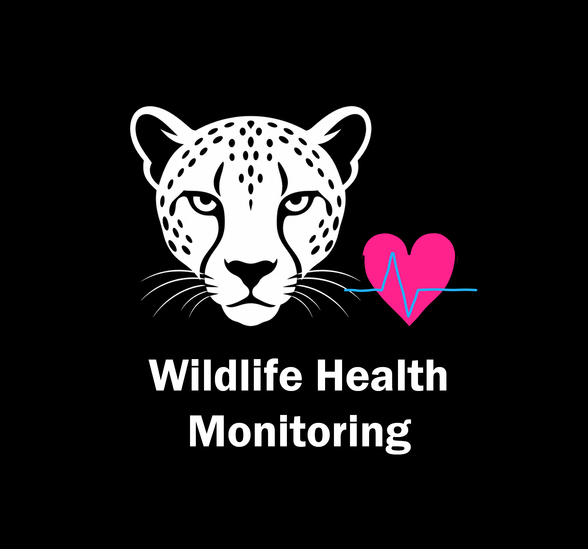

Wildlife Health Monitoring
Can we measure the health of wildlife remotely and without contact?
Vital signs are among the first things to change when an animal is stressed or unwell, but measuring them normally means capture and sedation. We combine thermal imaging, long-range video and physics-informed models of heat transfer through fur to recover those signals at a distance, so that animals can be screened without ever being touched.